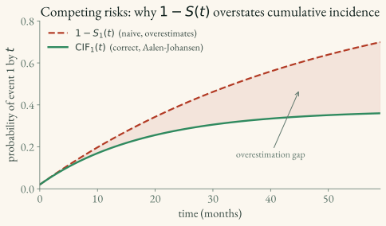

Multi-Events and Competing Risks
In many clinical settings, patients are at risk for more than one event type, and the occurrence of one may preclude the other.
Competing Risks
A competing risk is an event that prevents the event of interest from occurring. Example: a patient dies before tumor recurrence — death “competes” with recurrence.
Cumulative incidence function (CIF)
The cumulative incidence function CIF_k(t) is the probability that a subject experiences event type k on or before time t — i.e. P(T ≤ t and event = k). It is the expected fraction of the cohort who have had event k by time t.
For a single event type, 1 - S(t) (where S(t) is the survival probability — the chance of still being event-free past time t) already gives this cumulative probability. Under competing risks it does not: 1 - S(t) treats a patient removed by a competing event (death) as if they could still later have the event of interest (recurrence), so it overestimates. The CIF discounts those patients correctly by weighting each instant by the chance of still being event-free up to then:
\text{CIF}_k(t) = \int_0^t S(u^-)\, h_k(u)\, du
To have event k at instant u you must (a) remain free of all event types up to u—the event-free survival S(u^-)—and (b) experience event k then, at cause-specific hazard h_k(u). The CIFs of all mutually exclusive first events sum to 1-S(t), partitioning total incidence among the causes. (For S(t) and h(t), see 1.1.)
Ignoring competing risks leads to overestimation of the CIF — which is exactly the 1 - S(t) error above.

How the CIF relates to S(t), h(t), and H(t)
The four functions from 1.1 plus the CIF split into two pairs — probabilities (S and CIF) and the rate machinery beneath them (h and H):
| Function | What it is | Probability? | Per-cause? | Over time |
|---|---|---|---|---|
| S(t) survival | P(still event-free past t) | yes | no | starts at 1, decreases |
| h(t) hazard | instantaneous rate at t | no — a rate | — | rises/falls freely |
| H(t) cumulative hazard | accumulated rate, ∫₀ᵗ h | no — a rate total | — | starts at 0, increases |
| CIF_k(t) | P(had event k by t) | yes | yes (one per cause) | starts at 0, increases |
- CIF vs S(t) — the closest pair, both probabilities. With no competing risks they are exact complements, CIF(t) = 1 − S(t). With competing risks that breaks: 1 − S(t) lumps all causes together, while CIF_k isolates one, and the per-cause CIFs sum back to it (Σ_k CIF_k(t) = 1 − S(t)).
- CIF vs h(t)/H(t) — a different type of object: h and H are rates (can exceed 1), not probabilities. They are the engine — CIF_k is built from them via the integral above.
In one line: S(t) and CIF answer “what fraction of patients?”; h(t) and H(t) answer “how fast / how much accumulated rate?” The CIF is the competing-risks-aware, per-cause version of 1 − S(t).
Multi-Event Survival
These approaches differ in what they model, and that decides what question they answer:
- Cause-specific hazard models — fit one hazard model per event type; when modelling event k, competing events are treated as censored for that cause-specific fit. Each answers “among patients still event-free, what is the instantaneous rate of event k?” To obtain an absolute CIF, combine the estimated cause-specific hazards for all causes.
- Sub-distribution hazard (Fine–Gray) — links covariates to a modified risk set whose hazard is tied directly to one cause’s CIF. Patients who experienced a competing event remain represented in that risk set. The resulting sub-distribution hazard ratio describes association with the CIF; it is not a cause-specific hazard ratio and should not be given a causal interpretation.
- DeepHit — a neural network that skips hazards entirely and directly learns the joint distribution over (which event, when), P(event = k, T = t), in discrete time. No proportional-hazards assumption; covariates interact freely, at the cost of more data and tuning. Covered in full — model output, loss, and tuning — in
2.4.
Rule of thumb: use cause-specific models when the scientific question is about event rates among currently event-free patients; use Fine–Gray when the regression target is a particular cause’s cumulative incidence. Either approach can support prediction when specified and validated appropriately.
Tooling
The tools split along two axes — descriptive vs. covariate model, and among models, how they represent time. The top row describes a group; the bottom two predict from a patient’s features.
| Need | Tool | What it is |
|---|---|---|
| Estimate the CIF correctly (descriptive, no covariates) | lifelines.AalenJohansenFitter — see 04_packages/4.2_lifelines.md |
The competing-risks analogue of Kaplan-Meier; gives the cohort’s CIF curve for exploration/plotting |
| Deep competing-risks model (discrete time) | pycox.models.DeepHit — see 04_packages/4.1_pycox.md and 02_loss_functions/2.4_deephit_loss.md |
Neural net, distribution-free, bins time into intervals; flexible but needs tuning |
| Deep competing-risks model (parametric mixture) | auton_survival DSM — described in depth in 04_packages/4.5_auton_survival.md (with a usage snippet in 2.4) |
Models continuous time as a smooth mixture of parametric curves; fewer tuning knobs than DeepHit |
The Aalen-Johansen estimator is the competing-risks analogue of Kaplan-Meier — use it instead of 1 - S(t) for the CIF:
from lifelines import AalenJohansenFitter
ajf = AalenJohansenFitter()
ajf.fit(T, event_observed, event_of_interest=1) # event labels: 0 = censored, 1, 2, ...
ajf.plot()Practical Notes
- Define which events are truly mutually exclusive for the first-event question
- Multi-event models require event-type labels in addition to (T, δ)
- Plain Kaplan-Meier (
1 - S(t)) overestimates the CIF under competing risks — use Aalen-Johansen - If patients can experience several events in sequence, the problem may be recurrent-event or multi-state analysis rather than competing risks